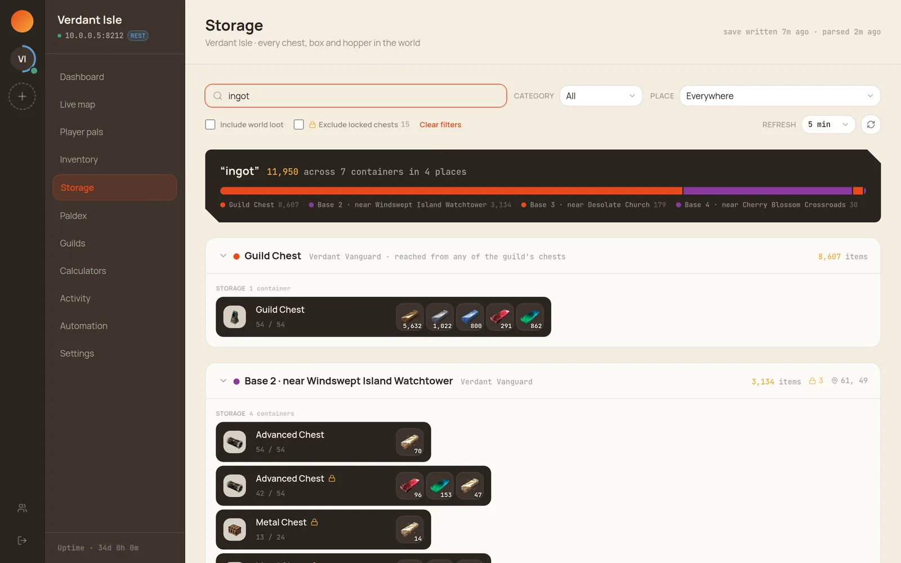

Reading save files
Party composition, palbox contents, per-pal stats, player inventories, what's in
every chest on the map, and guilds aren't exposed by REST or RCON at all, so those views read
Level.sav (Unreal's GVAS format) directly. Read-only, as a hard rule — the save is only ever opened for reading.
What the save gives you
One parse feeds every save-derived view: Player pals, Inventory, Storage, Paldex, Guilds, the Calculators' pal picker, and the offline positions on the Live map. Opening several of them costs one read, not several.

Inventory
- Bags are drawn by slot. The save records which slot every stack sits in, so a gap in
the grid is a real gap and
45 / 45 slotsmeans a genuinely full backpack. - Equipment is racked by socket — head, body, shield, glider, sphere module, accessories, four weapon slots and the food pouch — with a durability bar under anything that wears down, and remaining rounds for guns.
- Eggs name what's inside them, and gear shows the passives it grants.
- The character sheet shows HP, shield, hunger, the running food buff, and how the player spent their stat points. Those are points invested, not the totals on the player's own stat screen — the game computes those at runtime from level and equipment, and the save doesn't record them, so Palcon doesn't invent them.

Storage
Everything the world holds that isn't in a player's bag: base chests, feed boxes, refrigerators, breeding farms, ore pits and the input hoppers of every work station. One search covers all of them at once and answers with a distribution — how much exists, and how it splits across the places holding it.
- Containers are named and pictured from the game's own build menu, so a result points at a Refined Metal Chest rather than "a chest". Bases are labelled by the landmark they sit near, the way the map labels them.
- Guild chests are included. Their placed chests never name a container in the save — the only thing tying the chest to its contents is the container's own guild id — so shared guild stock would otherwise be invisible.
- Password-locked chests are marked with a lock and can be excluded from results. Whether they're searchable at all is an admin switch; see Who can see what.
- The world's treasure chests are off by default and sit behind a spoiler prompt. They are roughly nine tenths of the containers on a map, and their locations are the game someone is still playing — so they're a separate request rather than a filter applied after the fact.

Paldex
The save keeps two separate records per player, and they don't mean the same thing:
- The dex registers a species however it was acquired — caught, hatched, traded or awarded — and it stays registered after the pal is gone. That's what completion counts.
- The capture count only ever counts sphere captures.
The gap between them is the only thing the save says about how a pal was obtained: a species that's registered with no capture behind it was hatched, traded or given. Palcon lists those under Never caught one in a player's expanded row.
It's a statement about a species, not a pal. Nothing on an individual pal records its origin — the fields are level, IVs, passives, owner history and condition, and none of them says "hatched". So a species someone has both caught and hatched just looks caught, and catching one later removes it from the list.
Setup
Mount the world save directory into Palcon's container read-only (the
deploy spec shows the volume line), then set the
server's Save path to the path inside the container — e.g.
/saves/myserver, not the host path. The directory must contain
Level.sav.
With a palagent configured, no mount is needed: the agent serves the save bundle over its API and Palcon caches it locally.
How it works
- No home-grown GVAS parser. A bundled Python extractor builds on
palworld-save-tools (MIT, the
community standard). Results are cached against
Level.sav's mtime, so re-parsing only happens after the game autosaves. - Only the needed sections are parsed. A world save holds ~22 sections, and the unread ones (foliage, placed structures, container slots) are the enormous ones. Skipping them makes parsing ~100× faster and keeps memory flat on an established world.
- Both save containers are supported.
PlZ(zlib, original) andPlM(Oodle, game builds 0.6+). ThePlMunwrapper is decompress-only, so the read-only rule is structural, not just a convention. - Newer layouts are handled leniently. Decoding locates shifted structures by shape rather than fixed offsets, so a game update is unlikely to break it outright.
Keeping it private
These views show a lot about the people on your server — every pal they own, what's in their bags, where they logged off. All of it is switchable per server, and per player, under Settings → Who can see what. See Users & permissions for how the switches work.
Pal artwork, item artwork, names and map imagery are © Pocketpair, Inc., and are credited on-screen wherever they appear.